It was the middle of August when we set off for Davis, flying from Gatwick to San Fransisco and then getting the BART and the Amtrak to Davis. We stayed for just under three weeks, but this page is really about the four nights that we spent in a cabin near Lake Tahoe (at an altitude of 1,897 m in the Siera Nevada) over the middle weekend.
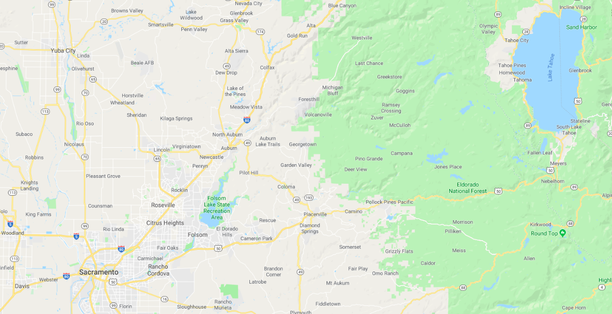Victoria and Brandon had rented a three-bedroom cabin in a town called Meyers, a few miles south of Lake Tahoe. On the map above, Davis is in the bottom left-hand corner and Meyers is just below the lake, a total of 109 miles. On Thursday 22nd August, after a short journey on Interstate 80 (to south of Sacramento) we turned on to US 50, which took us all the way. We had the luxury of travelling in V&B's new Chevrolet Pacifica, a seven-seater hybrid van.
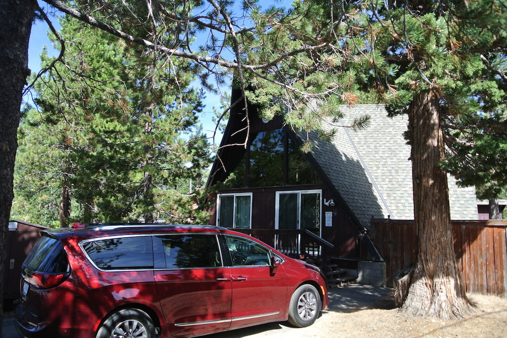Meyers is more of a residential area, but with quite a few holiday rentals. The cabin was basically three triangular sections, the back two at about 30 degrees to the main front one. There was a supermarket, a petrol station and a hardware store, plus a cafe, along with a very busy road running through the middle. Luckily the cabin was far enough away from the road for it to be quiet. Meyers has a wildlife area called 'Tahoe Paradise Park', complete with a children's playground and a small lake called Lake Baron. This had once been a quarry and had a fairly well maintained path all around it (about one mile).
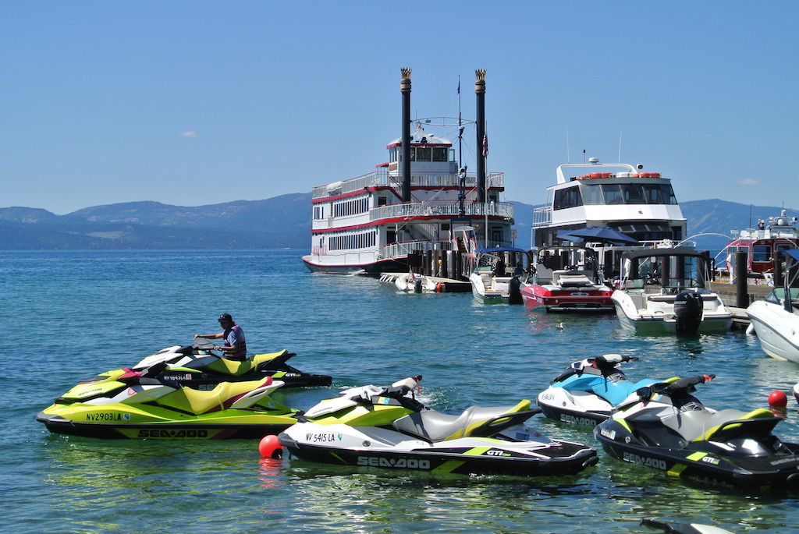The next day, Friday, Victoria had booked us on a boat trip across the lake. We drove into South Lake Tahoe and, from a hotel, picked up a courtesy bus to Zephyr Cove (which is actually in Nevada) to board the boat. It was a paddle steamer (now running on diesel) that had been brought from the Mississippi. It was still driven by the rear paddle wheel. The trip took two hours, going across, from east to west, to Emerald Bay. Apparently Lake Tahoe is very pure water and reflects the complete spectrum. So when the sky is blue, the lake looks blue. Emerald Bay, however, is supposed to look green. In Emerald Bay the boat went around Fannette Island (the only island in Lake Tahoe) and then headed back. We stationed ourselves inside on the lower deck, but went for frequent walks around the boat. There were some good commentaries during the trip. 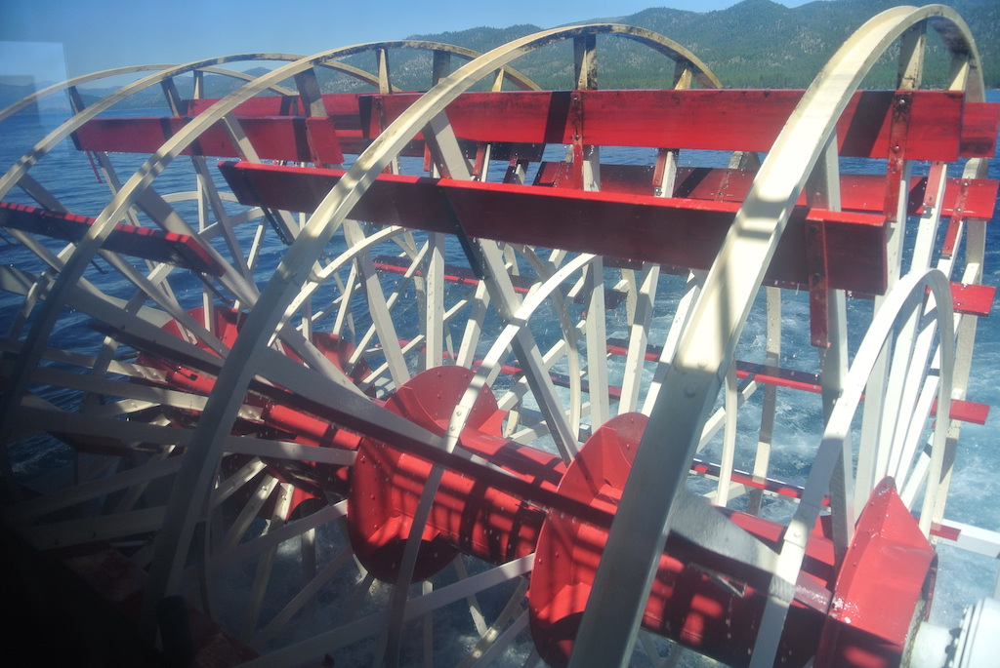 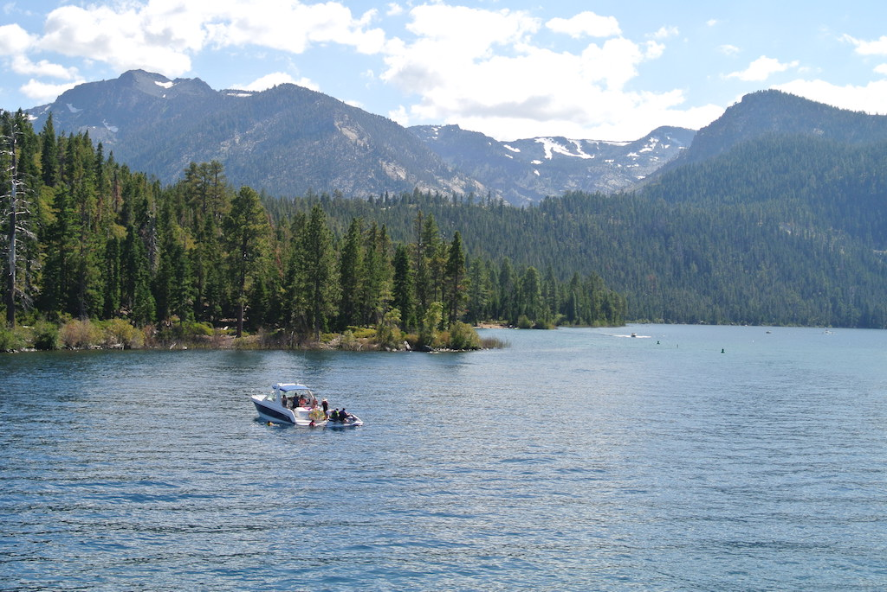
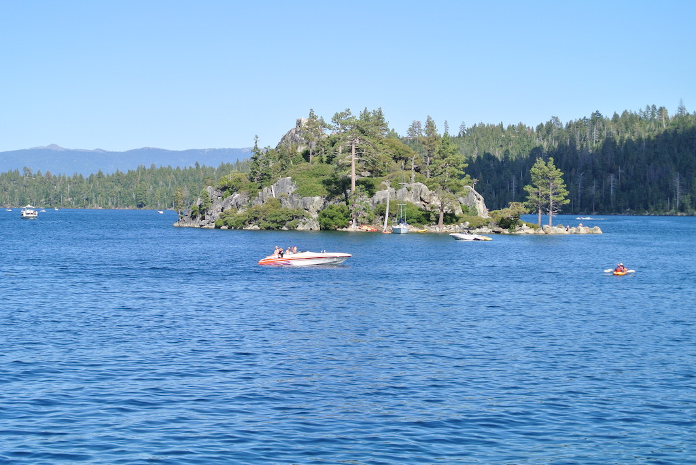When back in South Lake Tahoe we went to a pizza restaurant for dinner. Apart from knocking Austin's lemonade into my lap it was a good pizza.
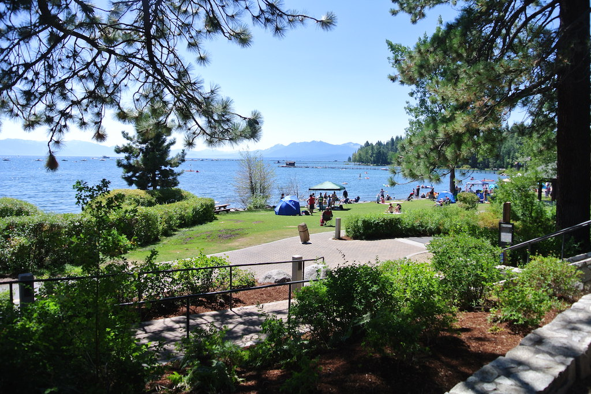Saturday was a more tiring day. Brandon drove us right around Lake Tahoe (about 72 miles). We travelled clockwise so that we were on the lake side of the road and so would get a better view. Going around Emerald Bay was quite twisty and we needed to stop for Austin. It was impossible to stop so as to get a view down into the bay, because everyone was trying to do that. A little further on, on the northern edge of Tahoe City (a small town) we stopped and walked back, along a lakeside path, to a small public beach. We had a picnic under some trees and then the children went into the water, with Brandon paddling and played in the sand. The only way to get them to leave was to bribe them with the prospect of an ice cream, which we got from a candy store in a modern (but wooden) small shopping centre. The store owner was very proud of stocking a variety of British confectionary. 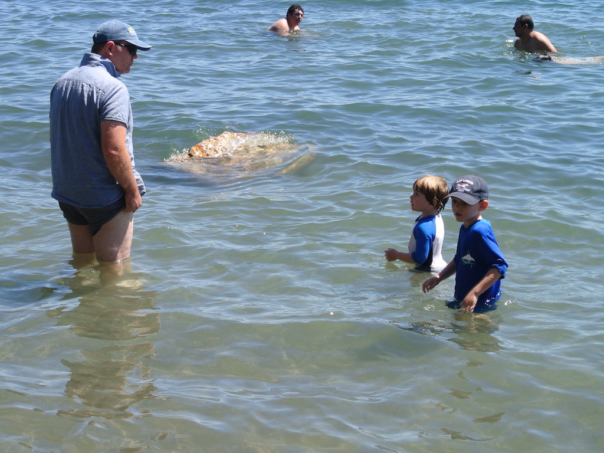
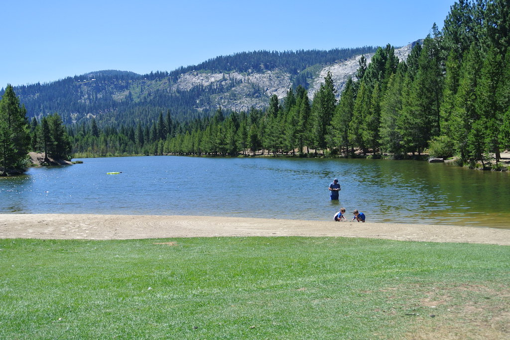Sunday was a quieter, more gentle day. We took a picnic (and some garden chairs) down to Lake Baron, just half a mile from the cabin. Most of the picnic tables, at least those in the shade, had been reserved by a church group, so we sat under a canvas awning, looking out over the lake. The church-goers all arrived for lunch (about 200 of them), but they mainly stayed over by the picnic area and children's playground.
Naturally the children played on the beach and in the water. Brandon went in a little further this time. While they got dried and changed, we went for a walk around the lake. On route we came across a fine tree called a Siera Juniper. 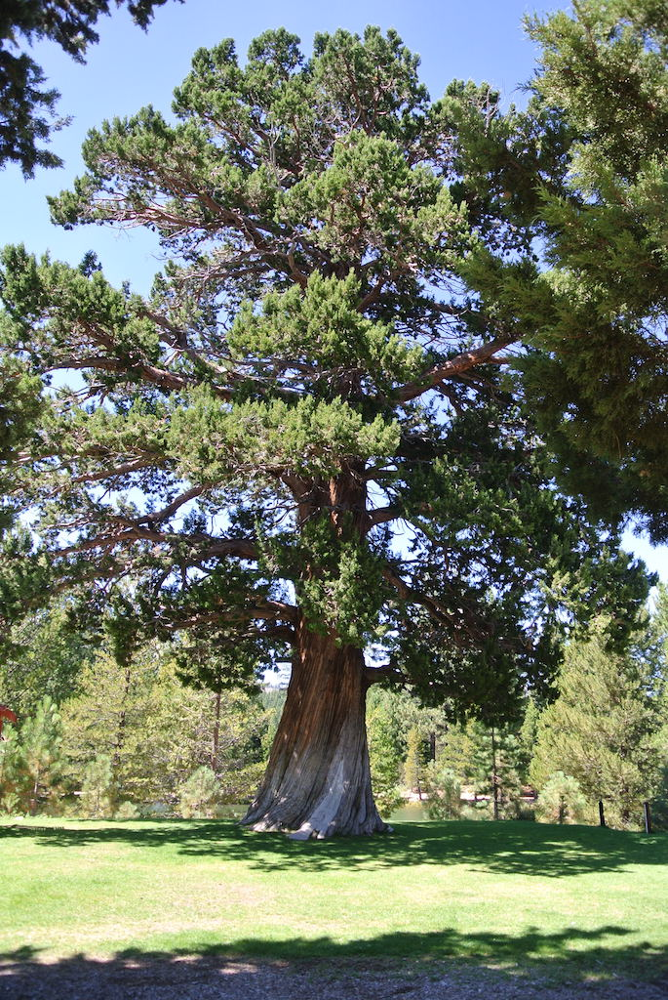 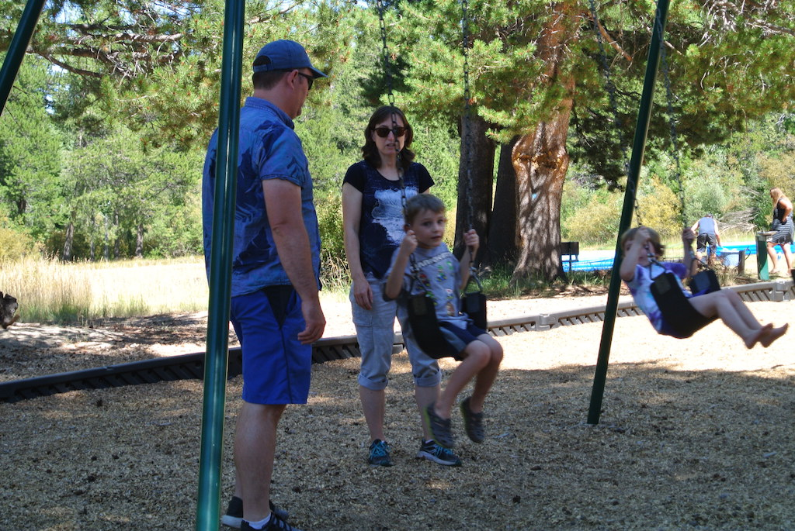
Monday was our day for packing up and travelling home. We left at 9:40 and were back in Davis in time for lunch.
© David James 2019 Last updated: 27th August 2019